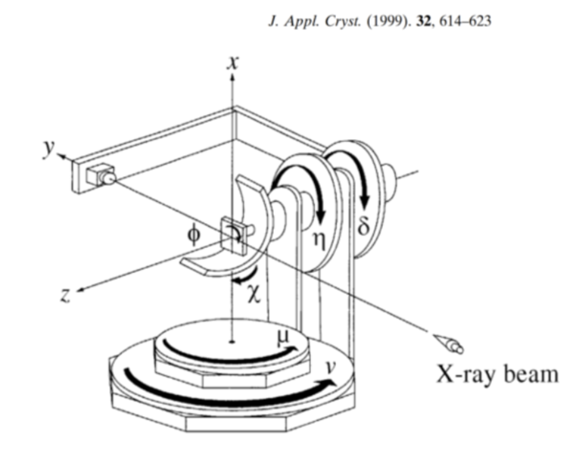

APS ISN Diffractometer#
Model of the ISN diffractometer at APS 19ID. This is a 3-axis diffractometer, based on the psic geometry described by Hoydoo Yoo (J Appl Cryst, 1999, 32, 614-623). This diffractometer geometry is very similar to the TARDIS diffractometer at NSLS-II.
Some psic axes do not exist in ISN; they are fixed at zero. The ISN diffractometer renames the \(\nu\) and \(\delta\) axes:
psic axis |
ISN axis |
range |
|---|---|---|
mu |
mu |
\(\pm 180\) |
eta |
eta |
fixed at 0 |
chi |
chi |
fixed at 0 |
phi |
phi |
fixed at 0 |
nu |
yaw |
\(\pm 180\) |
delta |
pitch |
\(\pm 180\) |
ISN has an additional radius motion with range 0-1000 (mm). This axis is not
part of the defined psic geometry.
The E6C geometry (see hkl_soleil, E6C geometry in the
tables) has a lifting_detector_mu mode that keeps
eta (E6C calls this axis omega), chi, and phi fixed. This is the only
E6C mode using the hkl engine where none of these axes are listed as
writeable(s).
In hkl_soleil, this is the E6C geometry.

Here, we setup a simulated ISN diffractometer, orient a GaAs crystal using two orientation reflections with the method of Busing & Levy, Acta Cryst 1967, 22, 457, then calculate, move, and scan in \(hkl\).
Create the Simulated ISN Diffractometer#
The simulator defines all the motor axes using
ophyd.SoftPositioner.
The six axes are specified in the order expected by the E6C geometry. The
additional radius axis is added to the list after all the expected axes.
Specified in this order, hklpy2 will use the first axes to compute \(h\),
\(k\), & \(l\) and ignore any remaining reals.
import hklpy2
import numpy as np
np.set_printoptions(precision=3, suppress=True)
psic = hklpy2.creator(
name="psic",
geometry="E6C",
solver="hkl_soleil",
solver_kwargs={"engine": "hkl"},
reals="mu eta chi phi yaw pitch radius".split(),
)
Configure some basic operating parameters. Length units are angstrom, angles are degrees, and energy is keV.
psic.beam.wavelength.put(12.3984 / 20)
psic.yaw.move(40)
psic.mu.move(psic.yaw.position/2)
psic.radius._egu = "mm"
psic.radius._limits = 0, 1000
psic.radius.move(800)
psic.core.mode = "lifting_detector_mu"
Print a brief summary of the ISN.
psic.wh()
psic.core.solver
wavelength=0.6199
pseudos: h=0, k=1.1034, l=0
reals: mu=20.0, eta=0, chi=0, phi=0, yaw=40, pitch=0
auxiliaries: radius=800
HklSolver(name='hkl_soleil', version='5.1.2', geometry='E6C', engine_name='hkl', mode='lifting_detector_mu')
In this mode, there are no extra parameters such as \(hkl_2\) or \(psi\). No azimuthal scans are provided in this mode.
print(f"{psic.core.mode=} {psic.core.extras=}")
psic.core.mode='lifting_detector_mu' psic.core.extras={}
Add a sample#
psic.core.add_sample("GaAs", 5.75)
Sample(name='GaAs', lattice=Lattice(a=5.75, system='cubic'))
Orient the sample#
Add two observed reflections and the motor positions associated with those \(hkl\) values.
We specify the motor positions in the order expected by E6C. We don’t need to specify the axis names.
r001 = psic.core.add_reflection(
(0, 0, 1),
(6.18 / 2, 0, 0, 0, 6.18, 0),
name="r001",
)
r100 = psic.core.add_reflection(
(1, 0, 0),
(6.18 / 2, 0, 90, 0, 6.18, 0),
name="r100",
)
Print the two reflections.
print(f"{r001=}")
print(f"{r100=}")
r001=Reflection(name='r001', h=0, k=0, l=1)
r100=Reflection(name='r100', h=1, k=0, l=0)
Calculate the \(UB\) (orientation) matrix from the two orienting reflections.
psic.core.calc_UB(r001, r100)
[[-0.0, -1.092727879509, -0.0],
[-0.0, -0.0, 1.092727879509],
[-1.092727879509, 0.0, 0.0]]
Compute hkl from motor positions#
Just calculate the hkl positions. These commands do not move the motors.
That is: pseudos = inverse(reals). Specify the motor positions in the
expected order.
print(f"{psic.inverse(6.18 / 2, 0, 0, 0, 6.18, 0)=}")
print(f"{psic.inverse(6.18 / 2, 0, 90, 0, 6.18, 0)=}")
psic.inverse(6.18 / 2, 0, 0, 0, 6.18, 0)=Hklpy2DiffractometerPseudoPos(h=0, k=0, l=1.0)
psic.inverse(6.18 / 2, 0, 90, 0, 6.18, 0)=Hklpy2DiffractometerPseudoPos(h=1.0, k=0, l=0)
Compute motor positions from hkl#
Just calculate the motor positions. These commands do not move the motors.
That is: reals = forward(pseudos).
List of solutions#
First, use the .core.forward() method to show the full list of possible motor
positions. Note that the forward() calculation produces a list of possible
solutions.
The (0,0,1) reflection should match the first orienting reflection.
The list may be empty, indicating no solutions were found, such as
the case for the (1,0,0) reflection which needs chi=90.
print(f"{psic.core.forward((0, 0, 1))=}")
print(f"{psic.core.forward((1, 0, 0))=}")
psic.core.forward((0, 0, 1))=[Hklpy2DiffractometerRealPos(mu=3.0901, eta=0, chi=0, phi=0, yaw=6.1802, pitch=0), Hklpy2DiffractometerRealPos(mu=176.9099, eta=0, chi=0, phi=0, yaw=-6.1802, pitch=0), Hklpy2DiffractometerRealPos(mu=3.0901, eta=0, chi=0, phi=0, yaw=-173.8198, pitch=-180.0), Hklpy2DiffractometerRealPos(mu=3.0901, eta=0, chi=0, phi=0, yaw=-173.8198, pitch=180.0), Hklpy2DiffractometerRealPos(mu=176.9099, eta=0, chi=0, phi=0, yaw=173.8198, pitch=-180.0), Hklpy2DiffractometerRealPos(mu=176.9099, eta=0, chi=0, phi=0, yaw=173.8198, pitch=180.0)]
psic.core.forward((1, 0, 0))=[]
Default solution#
Next, use the diffractometer’s forward() method (the one used when moving and
scanning the diffractometer position). This method, by default setting, returns
the first solution returned from the .core.forward() method. A
NoForwardSolutions exception is raised if the list of solutions is empty.
print(f"{psic.forward((0, 0, 1))=}")
try:
print(f"{psic.forward((1, 0, 0))=}") # unreachable, chi=90
except hklpy2.misc.NoForwardSolutions as exc:
print(f"Cannot compute forward((1,0,0)): {exc}")
psic.forward((0, 0, 1))=Hklpy2DiffractometerRealPos(mu=3.0901, eta=0, chi=0, phi=0, yaw=6.1802, pitch=0)
Cannot compute forward((1,0,0)): No solutions.
The forward() calculation computes new values for the writeable axes, using
the current positions of the remaining axes.
Unlike the physical diffractometer, the simulator can be positioned to the
unreachable chi=90 position to check the (1,0,0) position. With this
adjustment, the computed (1,0,0) reflection should match the second orienting
reflection.
psic.chi.move(90) # unreachable: ISN chi axis won't move for ISN diffractometer, but we can simulate it
print(f"{psic.forward((1, 0, 0))=}")
psic.chi.move(0) # put it back
psic.forward((1, 0, 0))=Hklpy2DiffractometerRealPos(mu=3.0901, eta=0, chi=90.0, phi=0, yaw=6.1802, pitch=0)
MoveStatus(done=True, pos=psic_chi, elapsed=0.0, success=True, settle_time=0.0)
Table of solutions#
from hklpy2.user import cahkl_table
from hklpy2.user import set_diffractometer
set_diffractometer(psic)
cahkl_table((0, 0, 1), (0, 1, 1), (1,1,1))
======= = ======== === === === ========= =========
(hkl) # mu eta chi phi yaw pitch
======= = ======== === === === ========= =========
(0 0 1) 1 3.0901 0 0 0 6.1802 0
(0 0 1) 2 176.9099 0 0 0 -6.1802 0
(0 0 1) 3 3.0901 0 0 0 -173.8198 -180
(0 0 1) 4 3.0901 0 0 0 -173.8198 180
(0 0 1) 5 176.9099 0 0 0 173.8198 -180
(0 0 1) 6 176.9099 0 0 0 173.8198 180
(0 1 1) 1 -40.6278 0 0 0 8.7443 0
(0 1 1) 2 -40.6278 0 0 0 -171.2557 -180
(0 1 1) 3 -40.6278 0 0 0 -171.2557 180
(1 1 1) 1 -38.4337 0 0 0 8.7636 -6.1892
(1 1 1) 2 -38.4337 0 0 0 -171.2364 -173.8108
======= = ======== === === === ========= =========
Save the orientation to a file#
psic.export(
"dev_aps-isn.yml",
comment="APS ISN diffractometer with oriented GaAs sample",
)
Show that configuration.
%pycat dev_aps-isn.yml
#hklpy2 configuration file
_header:
datetime: '2025-11-19 15:44:06.163052'
hklpy2_version: 0.2.1.dev5+gbbdb58469
python_class: Hklpy2Diffractometer
file: dev_aps-isn.yml
comment: APS ISN diffractometer with oriented GaAs sample
name: psic
axes:
pseudo_axes:
- h
- k
- l
real_axes:
- mu
- eta
- chi
- phi
- yaw
- pitch
axes_xref:
h: h
k: k
l: l
mu: mu
eta: omega
chi: chi
phi: phi
yaw: gamma
pitch: delta
extra_axes:
h2: 0
k2: 0
l2: 0
psi: 0
digits: 4
sample_name: GaAs
samples:
sample:
name: sample
lattice:
a: 1
b: 1
c: 1
alpha: 90.0
beta: 90.0
gamma: 90.0
digits: 4
angle_units: degrees
length_units: angstrom
reflections: {}
reflections_order: []
U:
- - 1
- 0
- 0
- - 0
- 1
- 0
- - 0
- 0
- 1
UB:
- - 6.283185307179586
- 0.0
- 0.0
- - 0.0
- 6.283185307179586
- 0.0
- - 0.0
- 0.0
- 6.283185307179586
digits: 4
GaAs:
name: GaAs
lattice:
a: 5.75
b: 5.75
c: 5.75
alpha: 90.0
beta: 90.0
gamma: 90.0
digits: 4
angle_units: degrees
length_units: angstrom
reflections:
r001:
name: r001
geometry: E6C
pseudos:
h: 0
k: 0
l: 1
reals:
mu: 3.09
eta: 0
chi: 0
phi: 0
yaw: 6.18
pitch: 0
reals_units: angstrom
wavelength: 0.61992
wavelength_units: angstrom
digits: 4
r100:
name: r100
geometry: E6C
pseudos:
h: 1
k: 0
l: 0
reals:
mu: 3.09
eta: 0
chi: 90
phi: 0
yaw: 6.18
pitch: 0
reals_units: angstrom
wavelength: 0.61992
wavelength_units: angstrom
digits: 4
reflections_order:
- r001
- r100
U:
- - -0.0
- -1.0
- -0.0
- - -0.0
- -0.0
- 1.0
- - -1.0
- 0.0
- -0.0
UB:
- - -0.0
- -1.092727879509
- -0.0
- - -0.0
- -0.0
- 1.092727879509
- - -1.092727879509
- 0.0
- 0.0
digits: 4
constraints:
mu:
label: mu
low_limit: -180.0
high_limit: 180.0
class: LimitsConstraint
eta:
label: eta
low_limit: -180.0
high_limit: 180.0
class: LimitsConstraint
chi:
label: chi
low_limit: -180.0
high_limit: 180.0
class: LimitsConstraint
phi:
label: phi
low_limit: -180.0
high_limit: 180.0
class: LimitsConstraint
yaw:
label: yaw
low_limit: -180.0
high_limit: 180.0
class: LimitsConstraint
pitch:
label: pitch
low_limit: -180.0
high_limit: 180.0
class: LimitsConstraint
solver:
name: hkl_soleil
description: HklSolver(name='hkl_soleil', version='5.1.2', geometry='E6C', engine_name='hkl',
mode='lifting_detector_mu')
geometry: E6C
real_axes:
- mu
- omega
- chi
- phi
- gamma
- delta
version: 5.1.2
engine: hkl
beam:
class: WavelengthXray
source_type: Synchrotron X-ray Source
energy: 20.000032010351074
wavelength: 0.61992
energy_units: keV
wavelength_units: angstrom
psic.move(0, 1, 1)
psic.wh()
wavelength=0.6199
pseudos: h=0, k=1.0, l=1.0
reals: mu=-40.6278, eta=0, chi=0, phi=0, yaw=8.7443, pitch=0
auxiliaries: radius=800
(0k1) scan#
Setup bluesky for scanning.
import bluesky
from bluesky.callbacks.best_effort import BestEffortCallback
from bluesky import plans as bp
bec = BestEffortCallback()
bec.disable_plots()
bec.disable_baseline()
RE = bluesky.RunEngine()
RE.subscribe(bec)
0
Move ISN to (001) which presets both \(h\) and \(l\).
psic.move(0, 0, 1)
psic.wh()
wavelength=0.6199
pseudos: h=0, k=0, l=1.0
reals: mu=3.0901, eta=0, chi=0, phi=0, yaw=6.1802, pitch=0
auxiliaries: radius=800
Scan from \((011)\) to \((001)\), showing both \((hkl)\) and the three writeable angles.
RE(bp.scan([psic.h, psic.k, psic.l, psic.mu, psic.yaw, psic.pitch], psic.k, 1, 0, 6))
Transient Scan ID: 1 Time: 2025-11-19 15:44:06
Persistent Unique Scan ID: 'a6406340-324b-4c84-8078-1eec366a4fe4'
New stream: 'primary'
+-----------+------------+------------+------------+------------+------------+------------+------------+
| seq_num | time | psic_k | psic_yaw | psic_h | psic_l | psic_pitch | psic_mu |
+-----------+------------+------------+------------+------------+------------+------------+------------+
| 1 | 15:44:06.6 | 1.000 | 8.744 | 0 | 1.000 | 0 | -40.628 |
| 2 | 15:44:06.6 | 0.800 | 7.917 | 0 | 1.000 | 0 | -34.701 |
| 3 | 15:44:06.6 | 0.600 | 7.209 | 0 | 1.000 | 0 | -27.359 |
| 4 | 15:44:06.6 | 0.400 | 6.657 | 0 | 1.000 | 0 | -18.473 |
| 5 | 15:44:06.6 | 0.200 | 6.303 | 0 | 1.000 | 0 | -8.159 |
| 6 | 15:44:06.6 | -0.000 | 6.180 | 0 | 1.000 | 0 | 3.090 |
+-----------+------------+------------+------------+------------+------------+------------+------------+
generator scan ['a6406340'] (scan num: 1)
('a6406340-324b-4c84-8078-1eec366a4fe4',)
Do a relative \(\theta : 2\theta\) scan:
psic.move_reals(3, 0, 0, 0, 6, 0)
RE(bp.x2x_scan([psic.h, psic.k, psic.l, psic.mu, psic.yaw, psic.pitch], psic.yaw, psic.mu, -2, 2, 5))
Transient Scan ID: 2 Time: 2025-11-19 15:44:06
Persistent Unique Scan ID: '6ade00e8-5c04-4d72-849b-83dfb15b9aa2'
New stream: 'primary'
+-----------+------------+------------+------------+------------+------------+------------+------------+
| seq_num | time | psic_yaw | psic_mu | psic_h | psic_l | psic_pitch | psic_k |
+-----------+------------+------------+------------+------------+------------+------------+------------+
| 1 | 15:44:06.8 | 4.000 | 2.000 | 0 | 0.647 | 0 | 0 |
| 2 | 15:44:06.8 | 5.000 | 2.500 | 0 | 0.809 | 0 | 0 |
| 3 | 15:44:06.8 | 6.000 | 3.000 | 0 | 0.971 | 0 | 0 |
| 4 | 15:44:06.8 | 7.000 | 3.500 | 0 | 1.132 | 0 | 0 |
| 5 | 15:44:06.8 | 8.000 | 4.000 | 0 | 1.294 | 0 | 0 |
+-----------+------------+------------+------------+------------+------------+------------+------------+
generator x2x_scan ['6ade00e8'] (scan num: 2)
('6ade00e8-5c04-4d72-849b-83dfb15b9aa2',)
Scan the pitch rotation.
psic.move(0, 0, 1)
RE(bp.rel_scan([psic.h, psic.k, psic.l, psic.mu, psic.yaw, psic.pitch], psic.pitch, -1, 6, 8))
Transient Scan ID: 3 Time: 2025-11-19 15:44:07
Persistent Unique Scan ID: 'd766361e-ecf9-4ff7-8149-51545e041e88'
New stream: 'primary'
+-----------+------------+------------+------------+------------+------------+------------+------------+
| seq_num | time | psic_pitch | psic_yaw | psic_h | psic_l | psic_k | psic_mu |
+-----------+------------+------------+------------+------------+------------+------------+------------+
| 1 | 15:44:07.0 | -1.000 | 6.180 | 0.162 | 1.000 | 0.001 | 3.090 |
| 2 | 15:44:07.0 | 0.000 | 6.180 | 0.000 | 1.000 | -0.000 | 3.090 |
| 3 | 15:44:07.0 | 1.000 | 6.180 | -0.162 | 1.000 | 0.001 | 3.090 |
| 4 | 15:44:07.0 | 2.000 | 6.180 | -0.324 | 1.000 | 0.006 | 3.090 |
| 5 | 15:44:07.0 | 3.000 | 6.180 | -0.485 | 0.999 | 0.013 | 3.090 |
| 6 | 15:44:07.1 | 4.000 | 6.180 | -0.647 | 0.999 | 0.023 | 3.090 |
| 7 | 15:44:07.1 | 5.000 | 6.180 | -0.808 | 0.998 | 0.035 | 3.090 |
| 8 | 15:44:07.1 | 6.000 | 6.180 | -0.970 | 0.997 | 0.051 | 3.090 |
+-----------+------------+------------+------------+------------+------------+------------+------------+
generator rel_scan ['d766361e'] (scan num: 3)
('d766361e-ecf9-4ff7-8149-51545e041e88',)